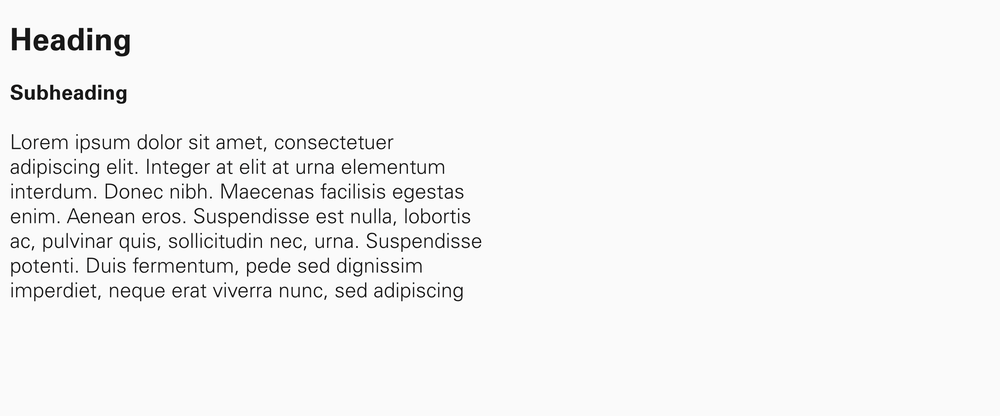
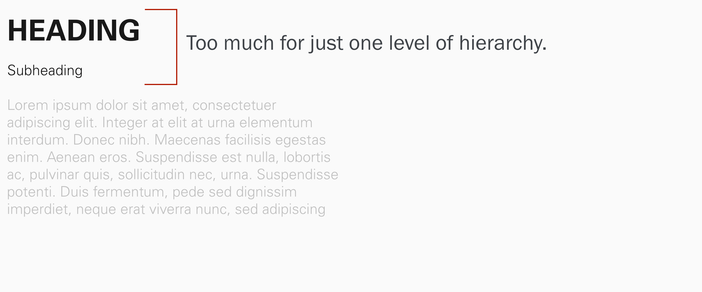

Rule number 1: Keep it to one page.
Rule number 2: Don’t forget to include your name and contact information.
Career Services at Cal Poly offer some good tips on how to write a resume:
Customize your resume by emphasizing relevant keywords, experience and skills to match each job/organization
Use action verbs to begin your short descriptive phrases.
Focus on accomplishments when writing your descriptions
Include specific actions you took and the results, emphasizing how you benefited the organization or team projects. Quantify when possible: tell how many, how much, or how often ($, #, %). Share how you demonstrated professional/soft skills (i.e. communication and teamwork skills).
List most important sections toward the top of resume; typically content within each section is listed in reverse chronological order.
Package your most relevant experience together with a heading that matches the type of work you are seeking (i.e. Marketing Experience – put marketing related experiences from internships, part-time jobs, class projects, club and volunteer activities in that section)
Ensure your resume is clear and concise (generally one page)
Use an easy-to-read professional font in 10 to 12 point size
Include links to your Portfolium, LinkedIn, professional website, etc.
Proofread carefully for grammatical and spelling errors, and have multiple people review it.
You should also download their guidelines (PDF).
First, you want to choose a well regarded typeface. Do your research and make sure you won’t use default fonts (such as Arial, Times New Roman, Calibri, Cambria, Myriad, Minion, and others). They’re not necessarily all bad typefaces, but they’re the default font on different applications, therefore overused.
But you won’t use cheap fonts you downloaded for free on some random website either. I’d suggest you to stay with Adobe TypeKit’s options, but do your research, because not all of them are suitable for resume. When in doubt, keep it simple.
Furthermore, make sure the typeface family you chose has all the variations you need (Light, Bold, Italic, Bold Italic, etc.)
Make sure that your visual hierarchy matches your content’s hierarchy. You want to make it easy for someone quickly find the information they’re looking for. You may use as many styles as you need, but no more than that. If content has same hierarchy, it should have the same formatting. You want your content to be consistent, which doesn’t mean it’s uniform. Different hierarchy asks for a different style.


Also, use alignment and spacing to group related information together. You may be tempted to include as much information as possible in one page, but you need to work with your blank space around typography. It needs to breathe.
Use of color is not required, but it can help. Keep your main text in black on white, but you may use one accent color to help with your hierarchy. You may use color on the type itself, as long as you make sure to choose a color that is different enough from black to justify its use, but that has enough contrast not to compromise legibility. Or you can choose to use colors in lines or other elements that help organize your content.